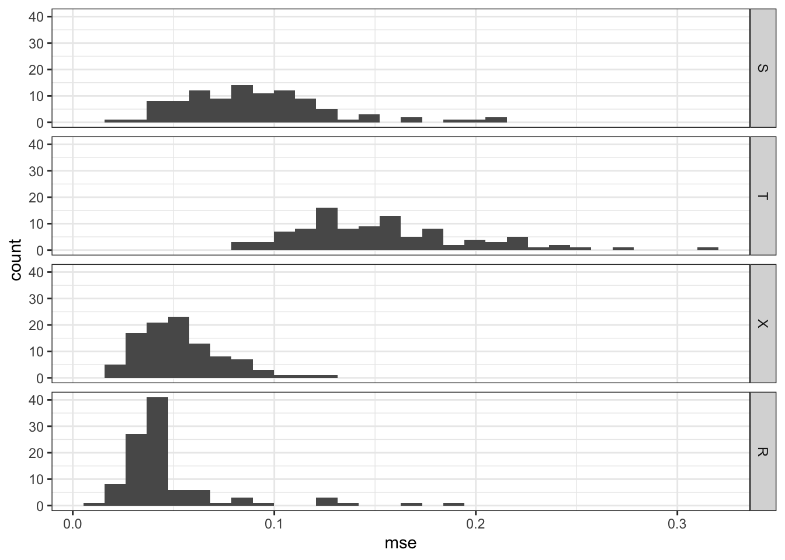
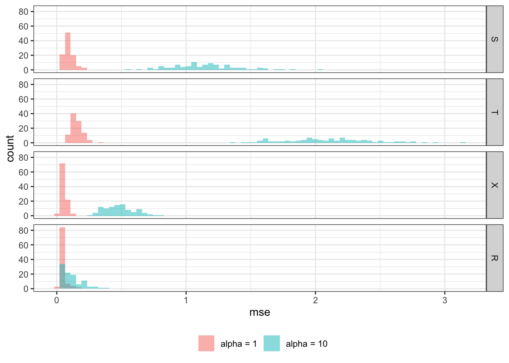
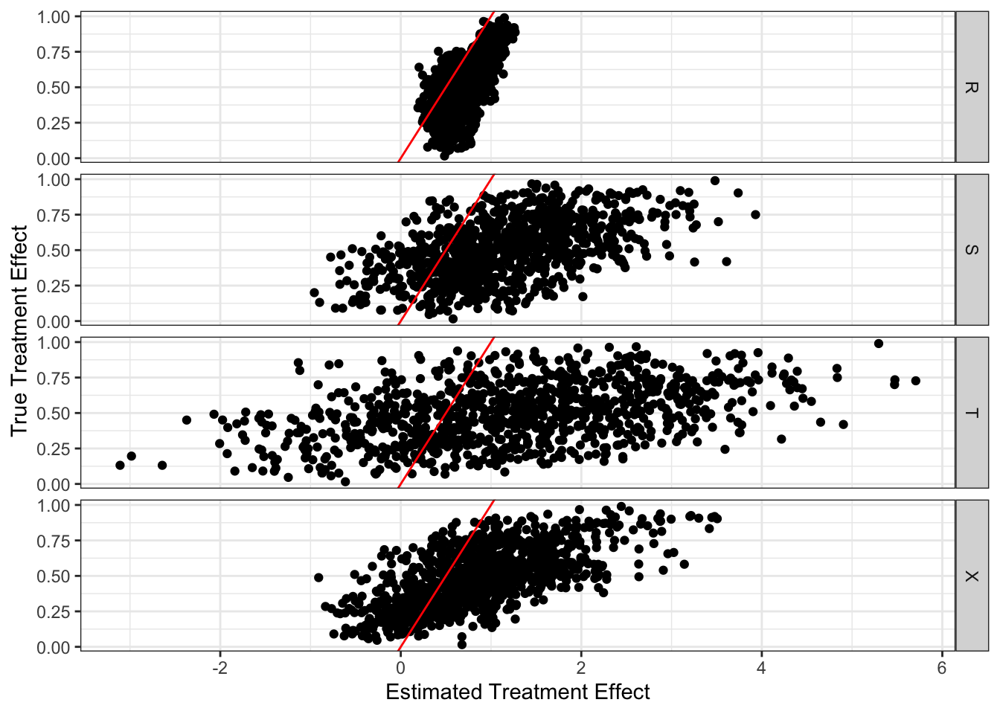
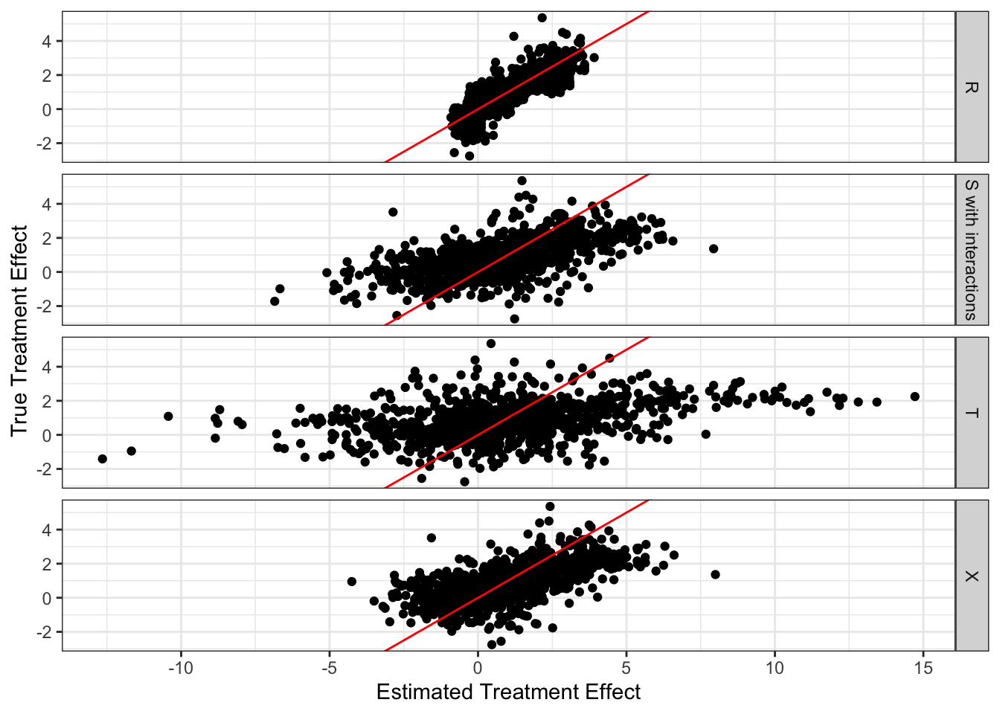
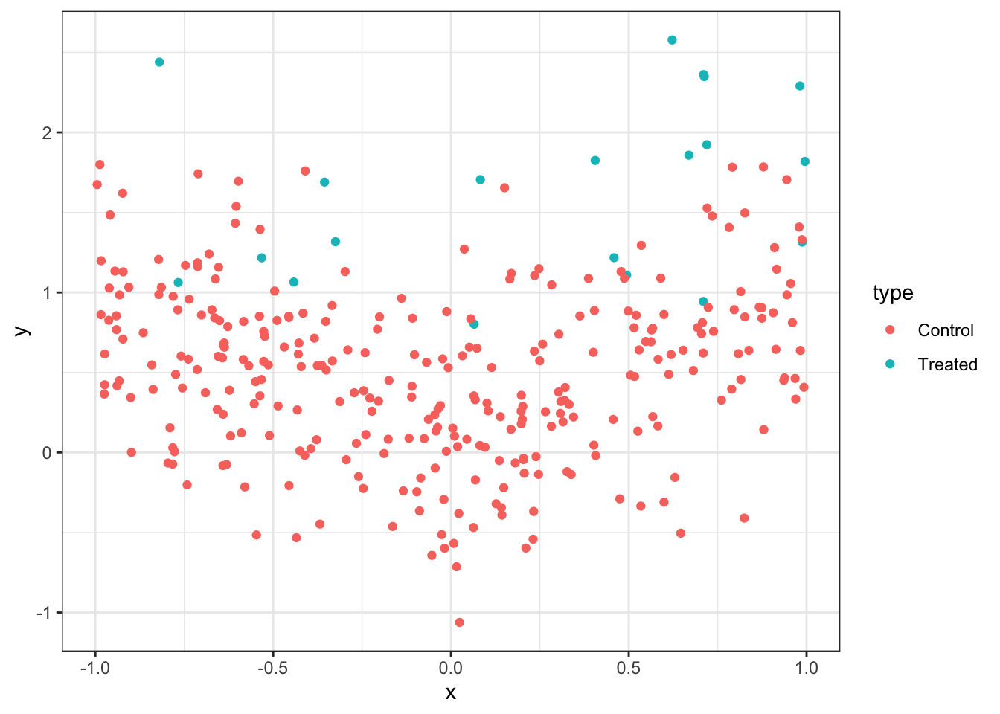
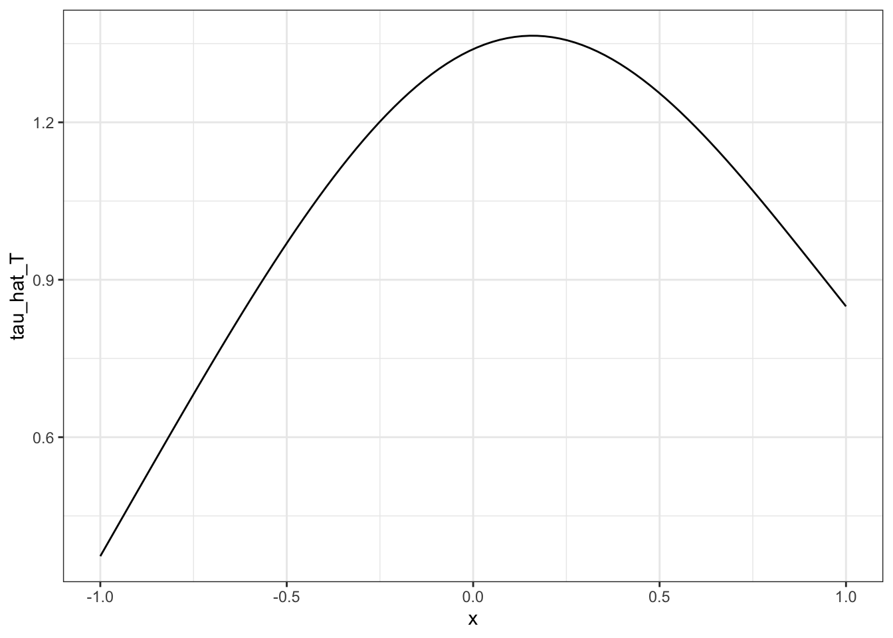
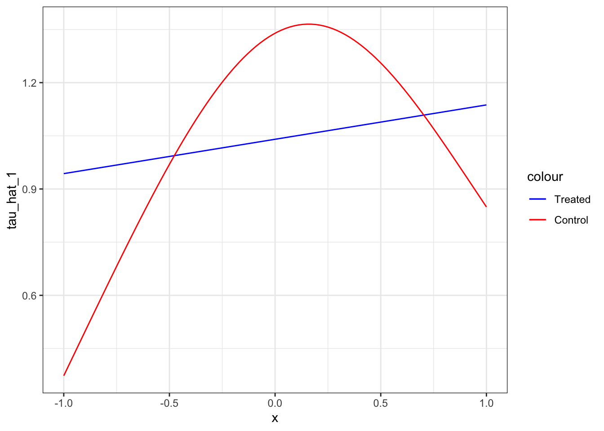

library(data.table)
library(tidyverse)
library(ranger)
library(rlearner)
library(mgcv)
library(rsample)
library(xgboost)
library(rlearner)12 S-, X-, T-, and R-learner
In this section, we look at the S-, X-, T-, and R-learner, which are method that estimate heterogeneous treatment effects when the treatment is binary. While X-learner and T-learner cannot be extended to continuous treatment cases, S-learner and R-learner can be.
12.1 Motivation
In Chapter 11, the basic idea of double machine learning (DML) methods was introduced when the treatment effect is homogeneous. We now turn our focus to the task of estimating heterogeneous treatment effects: the impact of a treatment varies based on observed attributes of the subjects. Heterogeneous treatment effect is also referred to as conditional average treatment effect (CATE).
Conditional on observed attributes.
Understanding how treatment effects vary can be highly valuable in many circumstances.
Example 1: If we come to know a particular drug is effective on elderly people but detrimental to kids, then doctors can make a smart decision of prescribing the drug to elderly people, but not to kids.
In this example, the heterogeneity driver is age.
Example 2: If we come to know that fertilizer is more effective in increasing corn yield in soil type A than B, then farmers can apply more fertilizer on the parts of the field where soil type is A but less on where soil type is B.
In this example, the heterogeneity driver is soil type.
As you can see in these examples, knowledge on the heterogeneity of the treatment effect and its drivers can help decision makers smart-target treatments and policies.
12.2 Modeling Framework
The model of interest in general form is as follows:
\[ \begin{aligned} Y_i & = \theta(X_i)\cdot T_i + g(X_i) + \varepsilon_i \\ T_i & = f(X_i) + \eta_i \end{aligned} \tag{12.1}\]
- \(Y\): dependent variable
- \(T\): treatment variable
- \(X\): features
Here are the assumptions:
- \(E[\varepsilon|T, X] = 0\)
- \(E[\eta|X] = 0\)
- \(E[\eta\cdot\varepsilon|T, X] = 0\)
For the notational convenicence, let \(\mu_1(X)\) and \(\mu_0(X)\) denote the expected value of the potential conditional outcomes:
\[ \begin{align} \mu_1(X) & = E[Y|T=1, X] = \theta(X) + g(X)\\ \mu_0(X) & = E[Y|T=0, X] = g(X) \end{align} \]
12.3 S-, T-, and X-Learner
In this section, S-, T-, and X-Learner are introduced, accompanied by a simple R code demonstrations. For demonstrations, a synthetic dataset that follows the DGP below is used.
Here is the dataset according to the DGP.
set.seed(58734)
N <- 1000
(
data <-
data.table(
x1 = runif(N),
x2 = runif(N),
x3 = runif(N),
mu = rnorm(N)
) %>%
.[, T := runif(N) < ((0.5+x1)/2)] %>%
.[, Y := (x1 + x2^2) * T + sqrt(x3) + mu] %>%
.[, id := 1:.N]
) 12.3.1 S-learner
S-learner estimates CATE by taking the following steps:
- Regress \(Y\) on \(T\) and \(X\) to estimate \(E[Y|T, X]\) using any appropriate ML regression methods and call it \(\hat{\mu}(T,X)\).
- Estimate \(\hat{\theta}(X)\) as \(\hat{\mu}(T=1,X)-\hat{\mu}(T=0,X)\)
In this approach, no special treatment is given to \(T\). It is just a covariate along with others (\(X\)). This approach is named S-learner by Künzel et al. (2019) because it involves estimating a single response function.
Here is a quick demonstration of how S-learner works (no cross-validation conducted in estimating \(E[Y|T, X]\) in this example).
#--------------------------
# step 1
#--------------------------
# RF used here, but any appropriate method is acceptable
rf_trained <-
ranger(
Y ~ T + x1 + x2 + x3,
data = data
)
#--------------------------
# step 2
#--------------------------
# Estimate treatment effect at X_0 = {x1 = 0.5, x2 = 0.5, x3 = 0.5}
#=== data for treated (1) and control (0) ===#
eval_data_1 <- data.table(T = TRUE, x1 = 0.5, x2 = 0.5, x3 = 0.5)
eval_data_0 <- data.table(T = FALSE, x1 = 0.5, x2 = 0.5, x3 = 0.5)
#=== predicted value of Y conditional on Y and X ===#
mu_hat_1 <- predict(rf_trained, data = eval_data_1)$predictions
mu_hat_0 <- predict(rf_trained, data = eval_data_0)$predictions
#=== theta_hat(X) ===#
(
theta_hat <- mu_hat_1 - mu_hat_0
)[1] 1.13251212.3.2 T-learner
- Regress \(Y\) on \(X\) using the treated observations to estimate \(\mu_1(X)\) using any appropriate ML regression methods.
- Regress \(Y\) on \(X\) using the control observations to estimate \(\mu_0(X)\) using any appropriate ML regression methods.
- Estimate \(\hat{\theta}(X)\) as \(\hat{\mu}_1(X)-\hat{\mu}(X)\)
This approach is named T-learner by Künzel et al. (2019) because it involves estimating two functions.
Here is a quick demonstration of how T-learner works (no cross-validation conducted in estimating \(E[Y|T=1, X]\) and \(E[Y|T=0, X]\) in this example).
#--------------------------
# step 1
#--------------------------
# RF used here, but any appropriate method is acceptable
rf_trained_1 <-
ranger(
Y ~ x1 + x2 + x3,
data = data[T == TRUE, ]
)
#--------------------------
# step 2
#--------------------------
# RF used here, but any appropriate method is acceptable
rf_trained_0 <-
ranger(
Y ~ x1 + x2 + x3,
data = data[T == FALSE, ]
)
#--------------------------
# step 3
#--------------------------
# Estimate treatment effect at X_0 = {x1 = 0.5, x2 = 0.5, x3 = 0.5}
#=== data for treated (1) and control (0) ===#
eval_data <- data.table(x1 = 0.5, x2 = 0.5, x3 = 0.5)
#=== predicted value of Y conditional on Y and X ===#
mu_hat_1 <- predict(rf_trained_1, data = eval_data)$predictions
mu_hat_0 <- predict(rf_trained_0, data = eval_data)$predictions
#=== theta_hat(X) ===#
(
theta_hat <- mu_hat_1 - mu_hat_0
)[1] 1.18550612.3.3 X-learner
- Estimate \(\mu_1(X)\) and \(\mu_0(X)\) using any appropriate ML regression methods. (Steps 1 and 2 of the T-learner)
- Impute individual treatment effect for the treated and control groups as follows
\[ \begin{align} \tilde{D}_i^1(X_i) = Y^1_i - \hat{\mu}_0(X_i)\\ \tilde{D}_i^0(X_i) = \hat{\mu}_1(X_i) - Y^0_i \end{align} \]
This is similar to cross-fitting we saw in Chapter 11, where the folds are the treated and control groups.
Regress \(\tilde{D}_i^1(X_i)\) on \(X\) using the observations in the treated group and denote the predicted value as \(\hat{\theta}_1(X)\)
Regress \(\tilde{D}_i^0(X_i)\) on \(X\) using the observations in the control group and denote the predicted value as \(\hat{\theta}_0(X)\)
- Calculate \(\hat{\theta}(X)\) as their weighted average
\[ \begin{align} \hat{\theta}(X) = h(X)\cdot\hat{\theta}_0(X) + [1-h(X)]\cdot\hat{\theta}_1(X) \end{align} \tag{12.2}\]
Any value of \(h(X)\) is acceptable. One option of \(h(X)\) may be the estimated propensity score \(E[W|X]\).
Here is a quick demonstration of how X-learner works (no cross-validation conducted in estimating \(E[Y|T=1, X]\) and \(E[Y|T=0, X]\) in this example).
#--------------------------
# Step 1
#--------------------------
# RF used here, but any appropriate method is acceptable
treated_data <- data[T == TRUE, ]
rf_trained_1 <-
ranger(
Y ~ x1 + x2 + x3,
data = treated_data
)
# RF used here, but any appropriate method is acceptable
control_data <- data[T == FALSE, ]
rf_trained_0 <-
ranger(
Y ~ x1 + x2 + x3,
data = control_data
)
#--------------------------
# step 2 (imputed individual treatment effect)
#--------------------------
#=== treated samples ===#
treated_data[, mu_hat_0 := predict(rf_trained_0, data = treated_data)$predictions]
treated_data[, D_tilde_1 := Y - mu_hat_0]
#=== control samples ===#
control_data[, mu_hat_1 := predict(rf_trained_1, data = control_data)$predictions]
control_data[, D_tilde_0 := mu_hat_1 - Y]
#--------------------------
# step 3 (regress D on X)
#--------------------------
#=== treated ===#
rf_trained_D1 <-
ranger(
D_tilde_1 ~ x1 + x2 + x3,
data = treated_data
)
#=== control ===#
rf_trained_D0 <-
ranger(
D_tilde_0 ~ x1 + x2 + x3,
data = control_data
)
#--------------------------
# step 4
#--------------------------
# Estimate treatment effect at X_0 = {x1 = 0.5, x2 = 0.5, x3 = 0.5}
eval_data <- data.table(x1 = 0.5, x2 = 0.5, x3 = 0.5)
#=== predicted value of Y conditional on Y and X ===#
theta_hat_1 <- predict(rf_trained_D1, data = eval_data)$predictions
theta_hat_0 <- predict(rf_trained_D0, data = eval_data)$predictions
#=== regress T on X ===#
rf_trained_T <-
ranger(
T ~ x1 + x2 + x3,
data = data,
probability = TRUE
)
#=== propensity score estimate ===#
p_score <- predict(rf_trained_T, data = eval_data)$predictions[, 2]
#=== weighted average of theta_hat_1 and theta_hat_0 with propensity score ===#
(
theta_hat <- p_score * theta_hat_0 + (1-p_score) * theta_hat_1
)[1] 0.997338212.4 R-learner
12.4.1 Theoretical background
Under the assumptions,
\[ \begin{aligned} E[Y|X] = \theta(X)\cdot f(X) + g(X) \end{aligned} \tag{12.3}\]
\(f(X) = E[T|X]\)
Let, \(l(X)\) denote \(E[Y|X]\). Taking the difference of Equation 12.1 and Equation 12.3 on both sides,
\[ \begin{aligned} Y_i \textcolor{red}{-l(X_i)} & = \theta(X_i)\cdot T_i + g(X_i) + \varepsilon_i \textcolor{red}{-[\theta(X_i)\cdot f(X_i) + g(X_i)]} \\ \Rightarrow Y_i - l(X_i) & = \theta(X_i)\cdot (T_i -f(X_i)) + \varepsilon_i \\ \end{aligned} \]
This is akin to residualization/orthogonalization seen in the DML approach in Chapter 11.
So, the problem of identifying \(\theta(X)\) reduces to estimating the following model:
\[ \begin{aligned} Y_i - l(X_i) & = \theta(X_i)\cdot (T_i -f(X_i)) + \varepsilon_i \end{aligned} \]
Since \(E[(T_i -f(X_i))\cdot\varepsilon_i|X] = E[\eta_i\cdot\varepsilon_i|X] = 0\) by assumption, we can regress \(Y_i - l(X_i)\) on \(X_i\) and \(T_i -f(X_i)\) to estimate \(\theta(X)\). Specifically, we can minimize the following objective function:
\[ \begin{aligned} Min_{\theta(X)}\sum_{i=1}^N \large(\normalsize[Y_i - l(X_i)] - [\theta(X_i)\cdot (T_i -f(X_i))]\large)^2 \end{aligned} \tag{12.4}\]
12.4.2 Estimation steps
In practice, we of course do not observe \(l(X)\) and \(f(X)\). So, we first need to estimate them using the data at hand and then subtract them from \(Y_i\) and \(T_i\), respectively. You can use any suitable statistical methods to estimate \(l(X)\) and \(f(X)\). Some machine learning methods allow you to estimate them without assuming any functional form or structural assumptions. If you believe they are linear (in parameter) functions of \(X\), you could alternatively use lasso or other linear models. X. Nie and Wager (2021) proposes that the estimation of \(l(X)\) and \(f(X)\) is done by cross-fitting (see Section 11.1.4) to avoid over-fitting bias. Let \(I_{-i}\) denote all the observations that belong to the folds that \(i\) does not belong to. Further, let \(\hat{l}(X_i)^{I_{-i}}\) and \(\hat{f}(X_i)^{I_{-i}}\) denote \(l(X_i)\) and \(f(X_i)\) estimated using \(I_{-i}\).
Just like the DML approach discussed in Chapter 11, both \(Y\) and \(T\) are orthogonalized.
Then the quality of fit (explaining the heterogeneity in the impact of treatment) can be expressed as follows, which is the empirical version of Equation 12.4:
\[ \begin{aligned} \sum_{i=1}^N [Y_i - \hat{l}(X_i)^{I_{-i}} - \theta(X)\cdot (T_i - \hat{f}(X_i)^{I_{-i}})]^2 \end{aligned} \]
This is called R-score, and it can be used for causal model selection, which will be covered later.
Let \(\tilde{Y}_i\) and \(\tilde{T}_i\) denote \(Y_i - \hat{l}(X_i)^{I_{-i}}\) and \(T_i - \hat{f}(X_i)^{I_{-i}}\), respectively. The final stage of the R-learner is to estimate \(\theta(X)\) by minimizing the R-score plus the regularization term (if desirable).
\[ \begin{aligned} \hat{\theta}(X) = argmin_{\theta(X)}\;\;\sum_{i=1}^N [\tilde{Y}_i - \theta(X)\cdot\tilde{T}_i]^2 + \Lambda(\theta(X)) \end{aligned} \tag{12.5}\]
where \(\Lambda(\theta(X))\) is the penalty on the complexity of \(\theta(X)\). For example, if you choose to use lasso, then \(\Lambda(\theta(X))\) is the L1 norm. You have lots of freedom as to what model you use in the final stage. The econml package offers several off-the-shelf choices of R-learner (DML) approaches that differ in the model used at the final stage, including causal forest, lasso, etc.
12.4.3 R-learner by hand
This section goes through R codes to implement the estimation steps provided above to further our understanding of how R-learner works using the same synthetic dataset as the one used in Section 12.3.
We first cross-fit \(E[Y|X]\) and \(E[T|X]\) using random forest for both cases. We will use repeated (3 times) 5-fold cross-fitting. Resampling the data,
(
data_folds <- rsample::vfold_cv(data, v = 5, repeats = 3)
)# 5-fold cross-validation repeated 3 times
# A tibble: 15 × 3
splits id id2
<list> <chr> <chr>
1 <split [800/200]> Repeat1 Fold1
2 <split [800/200]> Repeat1 Fold2
3 <split [800/200]> Repeat1 Fold3
4 <split [800/200]> Repeat1 Fold4
5 <split [800/200]> Repeat1 Fold5
6 <split [800/200]> Repeat2 Fold1
7 <split [800/200]> Repeat2 Fold2
8 <split [800/200]> Repeat2 Fold3
9 <split [800/200]> Repeat2 Fold4
10 <split [800/200]> Repeat2 Fold5
11 <split [800/200]> Repeat3 Fold1
12 <split [800/200]> Repeat3 Fold2
13 <split [800/200]> Repeat3 Fold3
14 <split [800/200]> Repeat3 Fold4
15 <split [800/200]> Repeat3 Fold5The following function takes a row number (n) and cross-fits \(E[Y|X]\) and \(E[T|X]\) using the training and test data stored in the nth row of data_folds.
cross_fit <- function(n, data_folds)
{
training_data <- analysis(data_folds[n, ]$splits[[1]])
eval_data <- assessment(data_folds[n, ]$splits[[1]])
#--------------------------
# E[Y|X]
#--------------------------
#=== train ===#
rf_trained_y <-
ranger(
Y ~ x1 + x2 + x3,
data = training_data
)
#=== fit ===#
eval_data[, y_hat := predict(rf_trained_y, data = eval_data)$predictions]
#--------------------------
# E[T|X]
#--------------------------
rf_trained_t <-
ranger(
T ~ x1 + x2 + x3,
data = training_data,
probability = TRUE
)
eval_data[, t_hat := predict(rf_trained_t, data = eval_data)$predictions[, 2]]
return(eval_data[, .(id, y_hat, t_hat)])
}Here is what the output of the function for the first split looks like.
cross_fit(1, data_folds) id y_hat t_hat
1: 8 1.12894746 0.3900865
2: 10 1.20619521 0.8137849
3: 16 2.11055584 0.6956071
4: 19 1.66612748 0.7430183
5: 24 0.97711495 0.2783762
---
196: 976 1.24745823 0.3559905
197: 986 1.90226459 0.7848286
198: 988 0.09856452 0.3313690
199: 994 1.15828871 0.3815524
200: 999 1.23109488 0.4655611Repeating this for all the splits,
(
cross_fitted_data_rp <-
lapply(
seq_len(nrow(data_folds)),
function(x) cross_fit(x, data_folds)
) %>%
rbindlist()
) id y_hat t_hat
1: 8 1.1265820 0.3838746
2: 10 1.2710531 0.7914683
3: 16 2.0934446 0.6716373
4: 19 1.5689207 0.7728349
5: 24 0.9738104 0.2713413
---
2996: 984 1.4447333 0.6111246
2997: 988 0.2112768 0.3394246
2998: 989 1.2142513 0.5499603
2999: 994 1.0262291 0.3408294
3000: 996 0.9049447 0.5382365We finally take the mean of the cross-fits by id as each id has tree estimates.
(
cross_fitted_data <-
cross_fitted_data_rp[, .(
t_hat = mean(t_hat),
y_hat = mean(y_hat)
), by = id]
) id t_hat y_hat
1: 8 0.4532550 1.1761568
2: 10 0.7740161 1.1470253
3: 16 0.5242056 1.9554895
4: 19 0.6223349 1.6357163
5: 24 0.3034603 1.0096122
---
996: 980 0.4608352 1.5986389
997: 981 0.1200376 0.8747466
998: 982 0.6291434 1.0229563
999: 996 0.5064177 0.8796906
1000: 1000 0.3033786 1.3630618We then merge the data to the original data, and define \(\tilde{Y}\) and \(\tilde{T}\).
(
data_2nd <-
cross_fitted_data[data, on = "id"] %>%
.[, `:=`(
y_tilde = Y - y_hat,
t_tilde = T - t_hat
)] %>%
.[, .(y_tilde, t_tilde, x1, x2, x3)]
) y_tilde t_tilde x1 x2 x3
1: 0.02185133 -0.5942087 0.260608266 0.06164198 0.4589749
2: -1.03373018 -0.5714296 0.766984113 0.54764941 0.2009673
3: 1.60365721 0.4938529 0.826228121 0.87144558 0.9021309
4: 1.32224214 0.5060730 0.640185426 0.60915635 0.9121869
5: 0.29076658 0.5654463 0.513102608 0.98349865 0.2889536
---
996: -1.92603402 -0.5064177 0.503932977 0.98448894 0.4080396
997: -0.94039653 -0.3125415 0.004402003 0.08928705 0.7901242
998: 0.11977427 0.5844593 0.543469334 0.67529131 0.8898840
999: 1.29398249 -0.4388722 0.927181725 0.58389265 0.4166628
1000: -0.69038873 -0.3033786 0.037774180 0.66973547 0.8149703The first order condition of Equation 12.5 without \(\Lambda(\theta(X))\) is
\[ \begin{aligned} \sum_{i=1}^N (\tilde{Y}_i - \theta(X)\cdot\tilde{T}_i)\cdot \tilde{T}_i = 0 \end{aligned} \]
This can be rewritten as
\[ \begin{aligned} \sum_{i=1}^N \tilde{T}_i^2(\frac{\tilde{Y}_i}{\tilde{T}_i} - \theta(X)) = 0 \end{aligned} \]
So, this problem can be considered the problem of estimating \(\theta(X)\) when the dependent variable is \(\frac{\tilde{Y}_i}{\tilde{T}_i}\) with individual weights of \(\tilde{T}_i^2\).
data_2nd[, `:=`(
weight = t_tilde^2,
y_to_t = y_tilde / t_tilde
)]Let’s use xgboost() for a non-parametric estimation of \(\theta(X)\).
#=== set up the data with weights ===#
data_2nd_xgb <-
xgb.DMatrix(
data = data_2nd[, .(x1, x2, x3)] %>% as.matrix(),
label = data_2nd[, y_to_t],
weight = data_2nd[, weight]
)
#=== train ===#
xgb_trained_2nd <-
xgboost(
data = data_2nd_xgb,
nrounds = 200,
objective = "reg:squarederror"
)You can now predict \(\theta(X)\) at particular values of \(X\). Let’s estimate \(\theta(X)\) at \(X_0 = \{x_1 = 0.5, x_2 = 0.5, x_3 = 0.5\}\).
eval_data <-
data.table(x1 = 0.5, x2 = 0.5, x3 = 0.5) %>%
as.matrix() %>%
xgb.DMatrix(data = .)
(
theta_hat <- predict(xgb_trained_2nd, eval_data)
)[1] 2.164435You could alternatively estimate \(\theta(X)\) parametrically using OLS. Suppose we somehow know that \(\theta(X)\) takes the following form \(\beta_1 x_1 + \beta_2 x_2^2 + \beta_3 x_3\). Then, the second stage estimation would be regressing \(\tilde{Y}\) on \(x_1\times T\), \(x_2^2\times T\), and \(x_2\times T\).
#=== train ===#
ols_2nd_stage <- lm(y_tilde ~ I(x1*t_tilde) + I(x2^2*t_tilde) + I(x3*t_tilde), data = data_2nd)
#=== summary ===#
summary(ols_2nd_stage)
Call:
lm(formula = y_tilde ~ I(x1 * t_tilde) + I(x2^2 * t_tilde) +
I(x3 * t_tilde), data = data_2nd)
Residuals:
Min 1Q Median 3Q Max
-3.3354 -0.7314 0.0390 0.6332 3.3914
Coefficients:
Estimate Std. Error t value Pr(>|t|)
(Intercept) -0.01052 0.03239 -0.325 0.745
I(x1 * t_tilde) 0.80643 0.18888 4.269 2.15e-05 ***
I(x2^2 * t_tilde) 1.10509 0.19827 5.574 3.21e-08 ***
I(x3 * t_tilde) 0.28246 0.18708 1.510 0.131
---
Signif. codes: 0 '***' 0.001 '**' 0.01 '*' 0.05 '.' 0.1 ' ' 1
Residual standard error: 1.022 on 996 degrees of freedom
Multiple R-squared: 0.2038, Adjusted R-squared: 0.2015
F-statistic: 85.01 on 3 and 996 DF, p-value: < 2.2e-16The results look pretty good mostly because we are cheating and using the correct functional form. Of course, in practice, you would not know the correct functional form of \(\theta(X)\). Finally, note that you should not use the codes here since they are just for demonstration to enhance our understanding of how R-learner works.
12.5 Comparing the learners
In this section, we compare the performance of the learners under two DGPs, which fall under the following general model:
\[ \begin{aligned} Y_i & =\theta(X_i)\cdot T + \alpha\cdot g(X_i) + \mu_i \\ T_i & = Bernouli(f(X_i)) \end{aligned} \]
where \(\alpha\) is a constant that changes the share of the nuisance function \(g(X)\) in \(Y\)’s variation (larger \(\alpha\) in magnitude, larger share of \(g(X)\)).
Performance comparisons under more DGPs can be found in X. Nie and Wager (2021). MC simulations here focus more on the role of the magnitude of the nuisance part in \(Y\), which X. Nie and Wager (2021) does not look at.
We first work on the following DGP (named DGP A).
DGP A with \(\alpha =1\) is almost the same as Set-up A of X. Nie and Wager (2021) except that they use \(Y_i =\theta(X_i)\cdot (T-0.5) + \alpha\cdot g(X_i) + \mu_i\), so that \(-0.5*\theta(X)\) is actually a part of the nuisance for \(Y\).
The following code generate data according to DGP A.
gen_data_A <- function(N, alpha){
data <-
data.table(
x1 = runif(N),
x2 = runif(N),
x3 = runif(N),
x4 = runif(N),
x5 = runif(N),
u = rnorm(N)
) %>%
.[, `:=`(
g_x = alpha * (sin(pi * x1*x2) + 2*(x3-0.5)^2 + x4 + 0.5*x5),
f_x = pmax(0.1, pmin(sin(pi * x1*x2), 0.9)),
theta_x = (x1+x2)/2
)] %>%
.[, t := as.numeric(runif(N) < f_x)] %>%
.[, y := theta_x * t + g_x + u] %>%
.[, id := 1:.N]
return(data)
}We use the rlearner package (Xinkun Nie, Schuler, and Wager 2022) to implement S-, T-, X-, and R-learner. In particular, we will use the *boost() functions (e.g., rboost() for R-learner), which use xgboost() for all the estimation tasks. Parameter tuning is done internally (see here for the hyper parameter search space). S-learner implemented by sboost() is different from the S-learner described above in that it include the interactions of the treatment variable and feature variables: that is, it regresses \(Y\) on \(T\), \(X\), and \(T*X\).
The following code implements S-, T-, X-, and R-learner for a single iteration and calculate MSE of estimating \(\theta(X)\) on the test data.
The rlearner package also offers *lasso() and *kern() series. The package is not designed to be flexible as there are fixed combinations of learners and you cannot specify estimation methods yourself.
N <- 1000
get_mse <- function(i, gen_data, alpha) {
print(i)
#--------------------------
# Prepare data
#--------------------------
train_data <- gen_data_A(N, alpha)
test_data <- gen_data_A(N, alpha)
test_X <- test_data[, .(x1, x2, x3, x4, x5)] %>% as.matrix()
# cor(train_data[, .(theta_x, g_x)])
#--------------------------
# Train and predict
#--------------------------
learner_ls <- list(rboost, sboost, xboost, tboost)
results <-
lapply(
learner_ls,
function(learner) {
trained_learner <-
learner(
train_data[, .(x1, x2, x3, x4, x5)] %>% as.matrix(),
train_data$t,
train_data$y
)
theta_data <-
data.table(
theta_true = test_data$theta_x,
theta_hat = predict(trained_learner, test_X)
)
return(theta_data)
}
) %>%
rbindlist(idcol = "learner") %>%
.[, learner := fcase(
learner == 1, "R",
learner == 2, "S",
learner == 3, "X",
learner == 4, "T"
)]
return(results)
}Repeating experiments 100 times for \(\alpha = 1\),
alpha <- 1
mc_results_1 <-
lapply(
seq_len(100),
function(i) get_mse(i, gen_data_A, alpha)
) %>%
rbindlist(idcol = "sim")Figure 12.1 shows the histogram of MSE by learner.
Code
mse_data_1 <-
mc_results_1 %>%
.[, .(mse = mean((theta_true - theta_hat)^2)), by = .(learner, sim)] %>%
.[, type := "alpha = 1"] %>%
.[, learner := factor(learner, levels = c("S", "T", "X", "R"))]
ggplot(data = mse_data_1) +
geom_histogram(aes(x = mse)) +
facet_grid(learner ~ .) +
theme_bw()
As you can see, R-learner performs the best, followed closely by X-learner, then by S-learner, and T-learner.
Now, we change the value of \(\alpha\) to 10 from 1 to make the nuisance part have a much larger share in \(Y\)’s variation.
alpha <- 10
mc_results <-
lapply(
seq_len(100),
function(i) get_mse(i, gen_data_A, alpha)
) %>%
rbindlist(idcol = "sim")Figure 12.2 shows the histogram of MSE by learner for \(\alpha=1\) and \(\alpha=10\). All the methods are negatively affected by the increase in the influence of the nuisance function, \(g(X)\). However, some learners are affected more than others. R-learner is. much less affected by the change than the other methods, and R-learner is clearly the best performing learner at \(\alpha = 10\). All the other learners performed considerably poorer compared to the case with \(\alpha =1\). This shows that R-learner shines particularly when the treatment effect is only the small portion of the total variation in \(Y\). This is a very important property because it is often the case for many scientific fields. For example, consider estimating the impact of a vocational training program on income. Such a program is unlikely to drastically change participants income level. Other factors that have nothing to do with the program (nuisance part) are likely to have much bigger role in determining income.
Code
mse_data_10 <-
mc_results_10 %>%
.[, .(mse = mean((theta_true - theta_hat)^2)), by = .(learner, sim)] %>%
.[, type := "alpha = 10"]
mse_data_all <-
rbind(mse_data_1, mse_data_10) %>%
.[, learner := factor(learner, levels = c("S", "T", "X", "R"))]
ggplot(data = mse_data_all) +
geom_histogram(
aes(x = mse, fill = type),
position = "identity",
alpha = 0.5,
bins = 75
) +
facet_grid(learner ~ .) +
scale_fill_discrete(name = "") +
theme_bw() +
theme(legend.position = "bottom")
Figure 12.3 plots the true (y-axis) and estimated (x-axis) treatment effect by learner for a single iteration at \(\alpha = 10\), which gives us insights into the decomposition of MSE (variance and bias).
Code
ggplot(data = mc_results_10[sim == 1, ]) +
geom_point(aes(y = theta_true, x = theta_hat)) +
geom_abline(slope = 1, color = "red") +
facet_grid(learner ~ .) +
theme_bw() +
xlab("Estimated Treatment Effect") +
ylab("True Treatment Effect")
According to the figure, all of them seem to suffer from positive bias. Here is the average of the true treatment effects less the estimated treatment effects by learner. So, indeed, they all suffer from bias. T-learner suffers from the most severe bias, and R-learner suffers from the smallest bias.
mc_results_10[, .(bias = mean(theta_true - theta_hat)), by = learner] learner bias
1: R -0.1312763
2: S -0.5830240
3: X -0.2645536
4: T -0.7078119T-learner has the highest variance of treatment effect estimates, followed by S-learner, X-learner, and then R-learner. Here is the average (over iterations) standard deviation of treatment effect estimates by learner.
mc_results_10[, .(sd = sd(theta_true - theta_hat)), by = .(learner, sim)] %>%
.[, .(sd = mean(sd)), by = learner] learner sd
1: R 0.2839190
2: S 0.8823216
3: X 0.6298141
4: T 1.2539635The problem with high variance in CATE estimation is that, the effect of treatment “looks” much more heterogeneous than it truly is. This leads to over-estimation of the benefit of targeted treatment (e.g., policy, medical treatment) assignment.
Let’s look at another DGP.
Here is the code to generate data according to DGP B.
Code
gen_data_B <- function(N, alpha){
data <-
data.table(
x1 = rnorm(N),
x2 = rnorm(N),
x3 = rnorm(N),
x4 = rnorm(N),
x5 = rnorm(N),
u = rnorm(N)
) %>%
.[, `:=`(
g_x = alpha * (pmax(x1 + x2, x3) + pmax(x4 + x5, 0)),
e_x = 1/2,
theta_x = x1+log(1 + exp(x2))
)] %>%
.[, t := as.numeric(runif(N) < e_x)] %>%
.[, y := theta_x * t + g_x + u]
return(data)
}Here is the code to run MC simulations for \(\alpha = 1\) and \(\alpha = 10\).
mc_results_1 <-
future_lapply(
seq_len(100),
function(i) get_mse(i, gen_data_B, alpha = 1)
) %>%
rbindlist(idcol = "sim")
mc_results_10 <-
future_lapply(
seq_len(100),
function(i) get_mse(i, gen_data_B, alpha = 10)
) %>%
rbindlist(idcol = "sim")
mse_data_1 <-
mc_results_1 %>%
.[, .(mse = mean((theta_true - theta_hat)^2)), by = .(learner, sim)] %>%
.[, type := "alpha = 1"]
mse_data_10 <-
mc_results_10 %>%
.[, .(mse = mean((theta_true - theta_hat)^2)), by = .(learner, sim)] %>%
.[, type := "alpha = 10"]
mse_data_all <- rbind(mse_data_1, mse_data_10) Figure 12.4 presents the results. Compared to DGP A, S- and T-learner performs much better at \(\alpha = 1\) almost matching that of X- and R-learner. However, once the role of nuisance function is greater at \(\alpha = 10\), then the performance of S-, T-, and X-learner deteriorate substantially (especially T-learner).
Code
ggplot(data = mse_data_all) +
geom_histogram(
aes(x = mse, fill = type),
position = "identity",
alpha = 0.5,
bins = 75
) +
facet_grid(learner ~ .) +
scale_fill_discrete(name = "") +
theme_bw() +
theme(legend.position = "bottom")Figure 12.5 presents the scatter plot of the true and estimated treatment effects by learner for a single iteration. None of them seem to be biased, but there is a clear difference in variance of CATE estimates.
Code
ggplot(data = mc_results_10[sim == 1, ]) +
geom_point(aes(y = theta_true, x = theta_hat)) +
geom_abline(slope = 1, color = "red") +
facet_grid(learner ~ .) +
theme_bw() +
xlab("Estimated Treatment Effect") +
ylab("True Treatment Effect")
12.6 X-, S-, T-, R-learner in Python
We saw a general R-learner framework for CATE estimation. We now look at an example of Linear DML, which uses a linear model at the final stage. So, we are assuming that \(\theta(X)\) can be written as follows in Equation 12.1:
\[ \begin{aligned} \theta(X) = \alpha + \beta_1 x_1 + \beta_2 x_2 + \dots + \beta_k x_k \end{aligned} \]
where \(x_1\) through \(x_k\) are the drivers of heterogeneity in treatment effects and \(\beta_1\) through \(\beta_k\) are their coefficients.
Packages to load for replication
library(data.table)
library(magick)
library(fixest)
library(officer)
library(dplyr)
library(ggplot2)
library(reticulate)
library(DoubleML)
library(MASS)We use both Python and R for this demonstration. So, let’s set things up for that.
library(reticulate)
use_virtualenv("ml-learning")For this demonstration, we use synthetic data according to the following data generating process:
\[ \begin{aligned} y_i = exp(x_{i,1}) d_i + x_{i,1} + \frac{1}{4}\cdot\frac{exp(x_{i,3})}{1 + exp(x_{i,3})} + \mu_i \\ d_i = \frac{exp(x_{i,1})}{1 + exp(x_{i,1})} + \frac{1}{4}\cdot x_{i,3}+ \eta_i \end{aligned} \]
Note that this is the same data generating process used in Chapter 11 except that the impact of the treatment (\(d\)) now depends on \(x_1\). We can use gen_data() function that is defined in Section 11.1.2.
#=== sample size ===#
N <- 1000
#=== generate data ===#
synth_data <-
gen_data(
te_formula = formula(~ I(exp(x1)*d)),
n_obs = N *2
)
X <- dplyr::select(synth_data, starts_with("x")) %>% as.matrix()
y <- synth_data[, y]
d <- synth_data[, d]We now split the data into training and test datasets.
from sklearn.model_selection import train_test_split
X_train, X_test, y_train, y_test, d_train, d_test= train_test_split(r.X, r.y, r.d, test_size = 0.5, random_state = 8923)Here, to train a linear DML model, we use the Python econml package, which offers one of the most comprehensive sets of off-the-shelf R-learner (DML) methods (Keith Battocchi 2019). We can use the DML class to implement linear DML.
from econml.dml import DMLDML is a child class of _Rlearner, which is a private class. The DML class has several child classes: LinearDML, SpatseLinearDML, NonParamDML, and CausalForestDML.
As we saw above in Section 12.4.2, we need to specify three models:
model_y: model for estimating \(E[Y|X,W]\)model_t: model for estimating \(E[T|X,W]\)model_final: model for estimating \(\theta(X)\)
In this example, let’s use gradient boosting regression for both model_y and model_t and use lasso with cross-validation for model_final. Let’s import GradientBoostingRegressor() and LassoCV() from the scikitlearn package.
from sklearn.ensemble import GradientBoostingRegressor
from sklearn.linear_model import LassoCVWe can now set up our DML framework like below:
est = DML(
model_y = GradientBoostingRegressor(),
model_t = GradientBoostingRegressor(),
model_final = LassoCV(fit_intercept = False)
)Note that no training has happened yet at this point. We simply created a recipe. Once we provide ingredients (data), we can cook (train) with the fit() method.
est.fit(y_train, d_train, X = X_train, W = X_train)- first argument: dependent variable
- second argument: treatment variable
X: variables that drive treatment effect heterogeneityW: variables that affect the dependent variable directly
Here, we set X = W.
Once, the training is done. We can use the effect() method to predict \(\theta(X)\).
te_test = est.effect(X_test)Figure 12.6 presents the estimated and true marginal treatment effect (\(\theta(X)\)) as a function of x1.
plot_data <-
data.table(
x1 = py$X_test[, 1],
te = py$te_test
)
ggplot(plot_data) +
geom_point(aes(y = te, x = x1)) +
geom_line(aes(y = exp(x1), x = x1), color = "blue") +
theme_bw()
Since we forced \(\theta(X)\) to be linear in x1, it is not surprising that the estimated MTE looks linear in x1 even though the true MTE is an exponential function of x1. In the next chapter (?sec-forest-cate), we discuss CATE estimators based on forest, which estimates \(\theta(X)\) non-parametrically, relaxing the assumption of \(\theta(X)\) being linear-in-parameter.
12.7 T-learner v.s. X-learner (Optional, and not that important)
Here, an advantage of X-learner over T-learner is demonstrated. This example also serves as an illustration of how these learners are implemented. Specifically, X-learner can be advantageous when the control-treatment assignments in the sample are unbalanced. For example, it is often the case that there are plenty of observations in the control group, while there are not many treated observations. For the purpose of illustration, consider a rather extreme case where there are only 10 observations in the treated group, while there are 300 observations in the control group. We use the following toy data generating process:
\[ \begin{align} y = \tau W + |x| + v \end{align} \]
where \(\tau = 1\). So, the treatment effect is not heterogeneous. For the purpose of illustrating the advantage of X-learner over T-learner, it is convenient if the underlying model is simpler.
set.seed(4345)
N_trt <- 20
N_ctrl <- 300
N <- N_trt + N_ctrl
data <-
data.table(
W = c(rep(1,N_trt), rep(0, N_ctrl)),
type = c(rep("Treated", N_trt), rep("Control", N_ctrl)),
x = 2 * runif(N)-1,
v = rnorm(N) / 2
) %>%
.[, y := W + abs(x) + v]ggplot(data = data) +
geom_point(aes(y = y, x = x, color = type)) +
theme_bw()
Let’s first estimate \(\mu_1(X)\) and \(\mu_0(X)\) (Step 1). Since we have only \(20\) observations in the treated group, we will use a linear regression to avoid over-fitting (following the example in Künzel et al. (2019)).
mu_1_trained <- lm(y ~ x, data = data[type == "Treated", ])
mu_0_trained <- gam(y ~ s(x, k = 4), data = data[type == "Control", ])Now that \(\mu_1(X)\) and \(\mu_0(X)\) are estimated, we can estimate \(\hat{\theta}(X)\) by T-learner.
x_seq <- data.table(x = seq(-1, 1, length = 100))
#=== T-learner ===#
tau_hat_data <-
x_seq %>%
.[, mu_1_hat := predict(mu_1_trained, newdata = x_seq)] %>%
.[, mu_0_hat := predict(mu_0_trained, newdata = x_seq)] %>%
.[, tau_hat_T := mu_1_hat - mu_0_hat]As you can see, T-learner is heavily biased. This is because of the unreliable estimation of \(\mu_1(X)\) due to lack of observations in the treated group.
Code
ggplot(data = tau_hat_data) +
geom_line(aes(y = tau_hat_T, x = x)) +
theme_bw()
Now, let’s move on to X-learner. We impute individual treatment effects (Step 2).
#=== mu (treated) ===#
mu_hat_1 <- predict(mu_0_trained, newdata = data[type == "Treated", ])
#=== mu (control) ===#
mu_hat_0 <- predict(mu_1_trained, newdata = data[type == "Control", ])
#=== assign the values ===#
data[type == "Treated", mu_hat := mu_hat_1]
data[type == "Control", mu_hat := mu_hat_0]
#=== find individual TE ===#
data[, D := ifelse(type == "Treated", y - mu_hat, mu_hat - y)]We can now regress \(D\) on \(X\) (Step 3),
#--------------------------
# tau (treated)
#--------------------------
tau_1_trained <- lm(D ~ x, data = data[type == "Treated", ])
#=== estimate tau_1 ===#
tau_hat_data[, tau_hat_1 := predict(tau_1_trained, newdata = tau_hat_data)]
#--------------------------
# tau (control)
#--------------------------
tau_0_trained <- gam(D ~ s(x, k = 4), data = data[type == "Control", ])
#=== estimate tau_1 ===#
tau_hat_data[, tau_hat_0 := predict(tau_0_trained, newdata = tau_hat_data)]Code
ggplot(data = tau_hat_data) +
geom_line(aes(y = tau_hat_1, x = x, color = "Treated")) +
geom_line(aes(y = tau_hat_0, x = x, color = "Control")) +
scale_color_manual(values = c("Treated" = "blue", "Control" = "red")) +
theme_bw()
Let’s use propensity score as \(g(X)\) in Step 4.
w_gam_trained <-
gam(
W ~ s(x, k = 4),
data = data,
family = binomial(link = "probit")
)Let’s predict \(E[W|X]\) at each value of \(X\) at which we are estiamting \(\tau\).
tau_hat_data[, g_x := predict(w_gam_trained, newdata = tau_hat_data, type = "response")]As you can see below, the mean value of \(g(x)\) is small because the treatment probability is very low (it is only \(20\) out of \(320\)).
mean(tau_hat_data[, g_x])[1] 0.06451538This number is basically \(20/320\). So, in this example, we could have just used the proportion of the treated observations. Notice that \(g(X)\) is multiplied to \(\hat{\theta}_0(X)\) in Equation 12.2. So, we are giving a lower weight to \(\hat{\theta}_0(X)\). This is because \(\hat{\theta}_0(X)\) is less reliable because \(\hat{\mu}_1(X)\) is less reliable due to the lack of samples in the treated group.
tau_hat_data[, tau_hat_X := g_x * tau_hat_0 + (1-g_x) * tau_hat_1]As you can see, X-learner outperforms T-learner in this particular instance at least in terms of point estimates of \(\tau(X)\).
Code
ggplot(data = tau_hat_data) +
geom_line(aes(y = tau_hat_T, x = x, color = "T-learner")) +
geom_line(aes(y = tau_hat_X, x = x, color = "X-learner")) +
geom_hline(yintercept = 1, aes(color = "True Treatment Effect")) +
scale_color_manual(
values = c(
"T-learner" = "red",
"X-learner" = "blue",
"True Treatment Effect" = "black"
),
name = ""
) +
ylab("Treatment Effect") +
theme_bw() +
theme(legend.position = "bottom")
Chernozhukov, Victor, Denis Chetverikov, Mert Demirer, Esther Duflo, Christian Hansen, Whitney Newey, and James Robins. 2018. “Double/debiased machine learning for treatment and structural parameters.” The Econometrics Journal 21 (1): C1–68. https://doi.org/10.1111/ectj.12097.
Keith Battocchi, Maggie Hei, Eleanor Dillon. 2019. “EconML: A Python Package for ML-Based Heterogeneous Treatment Effects Estimation.” https://github.com/microsoft/EconML.
Künzel, Sören R., Jasjeet S. Sekhon, Peter J. Bickel, and Bin Yu. 2019. “Metalearners for Estimating Heterogeneous Treatment Effects Using Machine Learning.” Proceedings of the National Academy of Sciences 116 (10): 4156–65. https://doi.org/10.1073/pnas.1804597116.
Nie, Xinkun, Alejandro Schuler, and Stefan Wager. 2022. Rlearner: R-Learner for Heterogeneous Treatment Effect Estimation.
Nie, X, and S Wager. 2021. “Quasi-Oracle Estimation of Heterogeneous Treatment Effects.” Biometrika 108 (2): 299–319. https://doi.org/10.1093/biomet/asaa076.